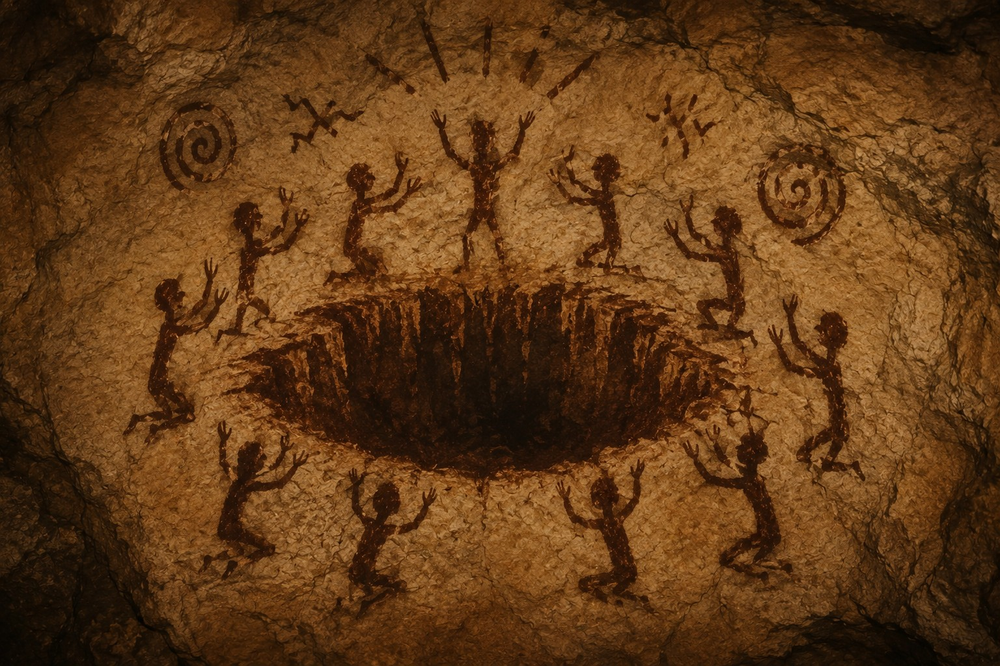
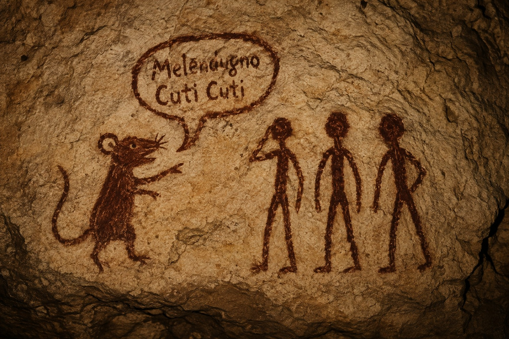
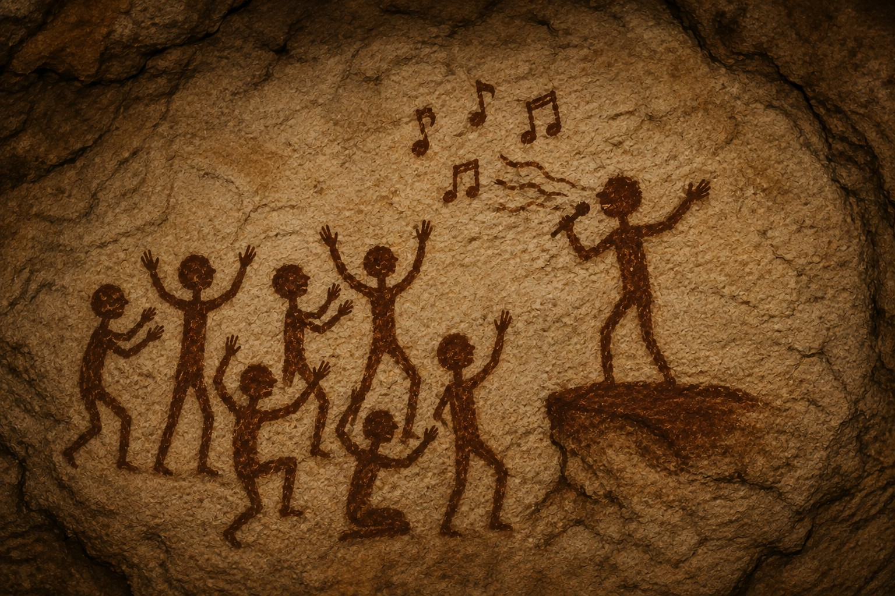

Le Origini
| Periodo | ~3000 aP |
| Area | Salento |
| Popoli | Serranidi, CutiCuti, Pacci |
Nel 3000 circa aP, le prime civiltà apparvero principalmente nel Salento, distribuite in piccoli insediamenti indipendenti l'uno dall'altro.
I primi popoli
- Serrano — i Serranidi
- Melendugno — i CutiCuti
- Martano — i Pacci
I Serranidi e l'abisso
Le conoscenze su queste prime tribù restano scarse. Si sa però una cosa con una certa sicurezza: i Serranidi realizzavano numerose illustrazioni raffiguranti un abisso situato sotto Serrano, che si apriva e si chiudeva periodicamente e che, a seconda delle occasioni, avrebbe inghiottito o restituito oggetti, persone e persino intere capanne.

I CutiCuti e il topo
Un'illustrazione ritrovata nei pressi di Melendugno raffigura invece un topo nell'atto di parlare ai CutiCuti, sebbene il contenuto esatto del messaggio resti, ad oggi, sconosciuto.

I Pacci
Un'illustrazione ritrovata nei pressi di Martano raffigura un personaggio dai tratti sorprendentemente somiglianti a un cantante di fama nazionale, sebbene la sua reale identità resti, ad oggi, sconosciuta.

I Primi Regni
| Periodo | 2008 aP – 2034 aP |
| Regni | CutiCuti, Pacci |
| Sovrani | Leonard Pecktris (CutiCuti), T. Ciano (Pacci) |
| Eventi principali | Fondazione dei due regni, incidente delle Dinamike, inizio della guerra CutiCuti-Pacci |
All'inizio degli anni 2000 aP, due regni cominciarono a farsi conoscere nel Salento: il regno dei CutiCuti, fondato nel 2008 aP dal re Leonard Pecktris, e il regno dei Pacci, fondato l'anno successivo, nel 2009 aP, dal re cantante T. Ciano. I due regni si contrapposero fin da subito per il modo radicalmente diverso di governare i rispettivi popoli.
Il regno dei Pacci
Il regno dei Pacci era un regno pacifico, orientato al benessere del popolo. Il re T. Ciano organizzava personalmente dei concerti in cui si esibiva come cantante, ed è inoltre ricordato per aver inventato il gioco di carte collezionabili Braw Starls.
Braw Starls
Braw Starls è un gioco che utilizza diverse carte collezionabili, ciascuna con abilità proprie, per disputare diverse modalità di gioco. Le due principali sono:
- Sopravvivenza — le carte si affrontano usando le proprie abilità per eliminarsi a vicenda; vince l'ultima carta rimasta in gioco.
- Arraffagemme — alcune gemme vengono nascoste sul terreno di gioco; vince chi ne trova per primo il maggior numero.
Il regno dei CutiCuti
Il regno dei CutiCuti era, al contrario, un regime totalitario. Il re Leonard Pecktris governava sfruttando l'abisso di Serrano e la paura che il popolo nutriva nei suoi confronti, imponendo così le proprie leggi.
Una delle leggi più note vietava a chiunque, tranne allo stesso Leonard Pecktris, di usare la carta Dinamike in Braw Starls: secondo il re, chi avesse infranto questo divieto sarebbe stato trascinato giù nell'abisso.
Le tensioni e l'inizio della guerra
Negli anni si susseguirono numerosi momenti di tensione tra i due regni, ma il punto di rottura arrivò nel 2034 aP, quando un cittadino dei Pacci introdusse clandestinamente nel regno dei CutiCuti un gran numero di carte Dinamike, distribuendole alla popolazione.
Leonard Pecktris, furioso per la violazione della propria legge, reagì fondando il primo esercito della storia e dando avvio all'invasione del popolo dei Pacci, segnando così l'inizio della guerra CutiCuti-Pacci.
La vicenda prosegue nella pagina Guerra CutiCuti-Pacci.
Guerra CutiCuti-Pacci
| Periodo | 2034 aP – 2073 aP |
| Luogo | Martano, Melendugno |
| Schieramenti | Regno dei CutiCuti contro Regno dei Pacci |
| Comandanti | Leonard Pecktris (CutiCuti), T. Ciano (Pacci) |
| Esito | Vittoria dei CutiCuti, annessione di Martano, ribellione popolare del 2073 aP, formazione della prima Diarchia della storia |
La Guerra CutiCuti-Pacci ebbe inizio subito dopo i fatti narrati ne I Primi Regni, quando il re Leonard Pecktris guidò il primo esercito della storia all'invasione di Martano, capitale del regno dei Pacci.
L'invasione di Martano
I Pacci non possedevano un esercito e non ne conoscevano nemmeno il concetto, per cui non furono in grado di organizzare una difesa adeguata all'arrivo delle truppe CutiCuti.
L'ultima resistenza
In un estremo tentativo di difesa, tutti i cittadini di Martano, compreso lo stesso re cantante T. Ciano, si riunirono nella capanna principale del villaggio, armandosi con bastoni e oggetti di fortuna. Quando le armate CutiCuti si presentarono davanti alla capanna, i Pacci si lanciarono all'attacco colpendo i soldati a bastonate, mentre T. Ciano continuava a cantare nonostante lo scontro in corso.
La sconfitta e la resa
Nonostante questo ultimo tentativo, le armate dei CutiCuti risultarono semplicemente più numerose e meglio organizzate, riuscendo rapidamente ad accerchiare i difensori. I Pacci furono costretti alla resa e il re T. Ciano venne catturato.
Conseguenze
L'annessione di Martano
Martano divenne parte integrante del regno dei CutiCuti.
Hoi4, il primo libro della storia
Il re Leonard Pecktris scrisse quello che è considerato il primo libro della storia, un testo in cui raccontava il periodo in cui era stato al culmine del proprio potere e spiegava come organizzare un'armata. Il libro fu intitolato Hoi4, acronimo di "Ho Occupato Illegalmente 4" — il numero 4 in riferimento ai Pacci, rappresentati da quel simbolo sul loro stemma.
La prima lingua scritta e la prima scuola
Scrivendo Hoi4, Leonard Pecktris inventò anche la prima lingua scritta della storia: fino ad allora, la comunicazione era affidata solo a suoni e gesti. Convinto della necessità di una lingua comune, il re fondò a Martano anche la prima scuola, dove bambini e adulti erano obbligati a imparare a leggere e scrivere.
La prima prigione
Leonard Pecktris inventò inoltre la prima prigione della storia, in cui rinchiuse il re T. Ciano insieme a chiunque violasse le sue leggi. In precedenza, chi infrangeva una legge veniva semplicemente cacciato dal villaggio; con la prigione, il re poteva invece tenere sotto controllo i propri sudditi.
Pur essendo un sovrano molto rigido — su tutte, la legge che vietava a chiunque tranne a lui di usare la carta Dinamike in Braw Starls — Leonard Pecktris fu anche responsabile di numerose invenzioni fondamentali per la civiltà.
La ribellione del 2073 aP
Nel 2073 aP, dopo anni di dominio CutiCuti, scoppiò una ribellione popolare. A organizzarla, dall'interno della stessa prigione in cui era rinchiuso, fu il re T. Ciano: grazie all'aiuto dei militari incaricati di sorvegliarlo, imparò la lingua del regno e riuscì così a organizzarsi con loro per dare inizio alla rivolta.
I ribelli riuscirono a liberare sia Martano che Melendugno, per poi fare irruzione nella capanna di Leonard Pecktris.
Lì lo trovarono intento a parlare con un gruppo di topi in una lingua mai sentita prima. Non appena i ribelli fecero irruzione, i topi fuggirono; Leonard Pecktris tentò a sua volta la fuga, ma fu catturato e rinchiuso nella stessa prigione in cui, anni prima, aveva imprigionato il re T. Ciano.
Da questo episodio deriva l'espressione ancora oggi in uso: quando qualcuno dice qualcosa di incomprensibile, si dice che sta parlando Topismo.
La prima Diarchia della storia
Dopo la ribellione e l'imprigionamento di Leonard Pecktris, il re T. Ciano tentò di mantenere l'ordine nel regno, ma senza riuscirci: il regno precipitò in un'anarchia totale.
T. Ciano decise allora di studiare l'Hoi4 per capire come governare il popolo, ma inizialmente non riuscì a comprenderne il contenuto. Con impegno riuscì comunque, alla fine, a decifrare il testo.
Decise quindi di liberare Leonard Pecktris, a condizione che questi rinunciasse a parte dei suoi poteri: da quel momento, ogni decisione del regno avrebbe richiesto l'accordo di entrambi i sovrani, dando così origine alla prima Diarchia della storia.
La Diarchia del Salento
| Periodo | 2073 aP – in corso |
| Regno | Regno Paccutiano |
| Sovrani | T. Ciano, Leonard Pecktris |
| Lingua | Paccutiano |
| Eventi principali | liberazione di Leonard Pecktris, rivelazione del Topismo, creazione dei ruoli di Intrattenitore e Amministratore, fondazione del Regno Paccutiano |
La Diarchia del Salento è il governo congiunto instaurato da T. Ciano e Leonard Pecktris subito dopo i fatti narrati ne Guerra CutiCuti-Pacci, e segna la nascita del Regno Paccutiano.
Il patto tra T. Ciano e Leonard Pecktris
Prima ancora di dare vita alla Diarchia, T. Ciano si mise in contatto con Leonard Pecktris, ancora rinchiuso in prigione, per chiedergli che cosa gli avessero detto i Topi e che cosa stesse dicendo con quella lingua incomprensibile.
Leonard Pecktris accettò di rivelarglielo, ma a una condizione: doveva essere liberato e tornare a governare il Salento insieme a T. Ciano. Quest'ultimo, avendo ormai perso completamente il controllo del regno e avendo bisogno di qualcuno capace di gestire un popolo così numeroso, accettò il patto.
La rivelazione del Topismo
Una volta libero, Leonard Pecktris spiegò finalmente a T. Ciano che cosa gli avessero insegnato i Topi: come governare un popolo, come creare una lingua, come costruire una prigione e tutto il resto, oltre alla loro stessa lingua, il Topismo. T. Ciano rimase scioccato dal racconto, ma non tentò di fermarlo.
Leonard Pecktris raccontò che i Topi erano semplicemente apparsi un giorno, mostrandogli attraverso immagini — non sapeva ancora parlare — tutto ciò che gli serviva. Da quel momento, ogni giorno verso sera, i Topi tornavano per dargli indicazioni su cosa fare.
Quando T. Ciano gli chiese perché desse ascolto ai Topi e non al proprio popolo, Leonard Pecktris rispose che i Topi, a differenza dei suoi sudditi, non usavano la carta Dinamike, e che gli avevano mostrato quanto potesse essere bello il suo regno. Consigliò infine a T. Ciano di imparare a sua volta la lingua dei Topi, perché — a suo dire — davano sempre buone idee.
I due ruoli della Diarchia
Da questa discussione nacquero i due ruoli su cui si sarebbe retta la Diarchia:
- L'Intrattenitore — colui che si occupava del popolo.
- L'Amministratore — colui che si occupava di organizzare lo stato.
Ogni decisione importante richiedeva l'accordo di entrambi i sovrani; per le necessità quotidiane, invece, il popolo doveva rivolgersi di volta in volta al ruolo competente.
I nuovi nomi del Regno Paccutiano
Consolidato il potere, la Diarchia iniziò a dare un nome a tutto ciò che le apparteneva. La prigione di Melendugno fu chiamata Prigione dei Pecktris, mentre la scuola di Martano divenne la Scuola di T. Ciano.
Anche la lingua parlata dai due sovrani, fino ad allora priva di un nome, ne ricevette finalmente uno: Paccutiano, unione delle parole "Pacci" e "Cutiano". Lo stesso regno, un tempo diviso tra CutiCuti e Pacci, fu rinominato Regno Paccutiano, e si dotò di un nuovo stemma che univa i simboli dei due regni originari.
Il silenzio dei Topi
Dopo la ribellione del 2073 aP, i Topi smisero improvvisamente di apparire. Venuto meno il loro insegnamento, nel regno non fu più inventato nulla di nuovo per molto tempo.
Tre anni dopo, i Topi tornarono a farsi vedere, ma questa volta con una richiesta ben precisa: chiedevano ai due diarchi di abbandonare il trono e di lasciare che fosse un sovrano scelto da loro stessi a governare il Regno Paccutiano. T. Ciano e Leonard Pecktris rifiutarono senza esitazione e cacciarono i Topi dal regno.
L'assedio del 2065 aP e la Topodanza
Cinque anni dopo il rifiuto, nel 2065 aP, i Topi tornarono a circondare l'intero Regno Paccutiano. Erano miliardi, un esercito sterminato che, ai confini del regno, dava vita a una sorta di marcia rituale: i popoli vicini la battezzarono la Topodanza.
Di fronte a questa minaccia, la Diarchia entrò in crisi e organizzò un nuovo esercito, formato dalla maggior parte dei cittadini del regno, schierandolo ai confini per fronteggiare l'assedio.
La battaglia notturna
Dopo un giorno di attesa, durante la notte, i Topi attaccarono. L'esercito paccutiano era pronto, ma sfinito dalla veglia forzata, e i Topi riuscirono ad avanzare con estrema facilità. Grazie alle loro dimensioni ridotte, si infilarono sotto ai soldati e iniziarono a rosicchiare tutto ciò che si opponeva al loro avanzare, edifici e persone senza distinzione, senza mai fermarsi: il loro unico obiettivo era raggiungere la grande capanna in cui si nascondevano T. Ciano e Leonard Pecktris.
Consapevoli di non poter vincere, i due diarchi decisero di fuggire dalla capanna attraverso un tunnel scavato sottoterra, richiudendone l'entrata alle proprie spalle non appena giunse loro notizia che le difese del regno erano state penetrate.
La scomparsa nell'Abisso di Serrano
Quando i Topi fecero irruzione nella grande capanna, non vi trovarono nessuno. Nello stesso istante, come mossi da una comunicazione telepatica, tutto l'esercito dei Topi cambiò rotta all'unisono e si riversò dentro e fuori dal regno alla ricerca dei due sovrani, che infine rintracciarono nei pressi di Serrano.
Senza più alcuna via di fuga, T. Ciano e Leonard Pecktris entrarono a Serrano e la attraversarono, ma non vi trovarono traccia dei Serranidi: solo piccole capanne distrutte. I Topi non si spinsero oltre i confini dell'abitato e rimasero fermi a osservare da fuori.
Mentre i due diarchi si fermarono a loro volta a fissare i Topi immobili, il terreno sotto di loro si aprì all'improvviso, inghiottendoli entrambi: l'Abisso di Serrano li aveva presi.
La Fine del Regno Paccutiano
| Periodo | 2065 aP – 2064 aP |
| Regno | Regno Paccutiano |
| Sovrano | Topus Maximus |
| Eventi principali | anarchia post-Diarchia, incoronazione di Topus Maximus, discorso dell'anniversario, scioglimento del re, apertura dell'Abisso a Melendugno |
La Fine del Regno Paccutiano è il periodo storico che, in appena un anno, portò dalla scomparsa di T. Ciano e Leonard Pecktris nell'Abisso di Serrano alla caduta del loro successore, il re Topus Maximus.
I due giorni di anarchia
Subito dopo la scomparsa dei due diarchi, il Regno Paccutiano rimase per due giorni privo di una guida. In assenza di un sovrano, scoppiò un breve periodo di anarchia, durante il quale il popolo si ritrovò senza nessuno in grado di prendere decisioni per conto dello stato.
L'incoronazione di Topus Maximus
Al termine dei due giorni di caos, furono i Topi a intervenire, portando con sé un nuovo sovrano: Topus Maximus, un re dalle orecchie da topo, dalle quali colava costantemente del cheddar.
Un anno di pace
Per un intero anno, il regno di Topus Maximus fu un periodo di pace. Il re fece ampliare le vecchie capanne, sostituendole con edifici in terraciana, molto più resistenti delle costruzioni precedenti. Fu lo stesso popolo a battezzare così il materiale non appena vide i nuovi edifici, in onore del vecchio re T. Ciano. Iniziò inoltre a tenere un discorso mensile sull'andamento del regno, rivolto a tutto il popolo.
Sfruttando il cheddar che gli usciva dalle orecchie, Topus Maximus lo utilizzò come fonte di cibo per i suoi sudditi. Si serviva inoltre dei Topi come esercito personale, con cui era in grado di comunicare direttamente. Il popolo lo considerava un sovrano bizzarro, ma finché il regno prosperava nessuno si lamentava apertamente.
Il discorso dell'anniversario e lo scioglimento
Esattamente un anno dopo la sua incoronazione, durante un discorso tenuto in onore dell'anniversario del suo arrivo sul trono, molti tra il pubblico notarono che dalle orecchie di Topus Maximus stava uscendo una quantità di cheddar decisamente superiore al solito. Poco dopo, il re iniziò a sciogliersi.
Il pubblico si diede alla fuga, ma i Topi bloccarono la folla mentre alcuni di loro corsero dal sovrano, ormai mezzo cheddarizzato, portandolo via lontano dagli sguardi dei presenti. Non è chiaro se i Topi intendessero davvero metterlo in salvo o se, al contrario, volessero semplicemente sottrarlo alla vista del pubblico.
La caduta nell'Abisso di Melendugno
Nonostante ciò, a Topus Maximus toccò lo stesso destino già subito da T. Ciano e Leonard Pecktris: il terreno si aprì improvvisamente sotto di lui, inghiottendolo.
A differenza dei due diarchi, però, l'abisso non si aprì a Serrano, bensì a Melendugno: fino a quel momento si riteneva che il fenomeno potesse manifestarsi soltanto a Serrano. Nessun cittadino assistette direttamente alla scena, e si pensa che siano stati gli stessi Topi a portare via il re proprio per evitare che il popolo scoprisse che l'abisso poteva aprirsi anche altrove.
La fine del regno
Dopo la scomparsa di Topus Maximus nell'Abisso di Melendugno, nessun altro sovrano salì mai più al trono. Il Regno Paccutiano cessò di esistere, e l'anarchia tornò a regnare sul Salento.
Insieme al re, scomparvero anche i Topi: da quel momento in poi, i cittadini non li videro mai più.